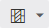
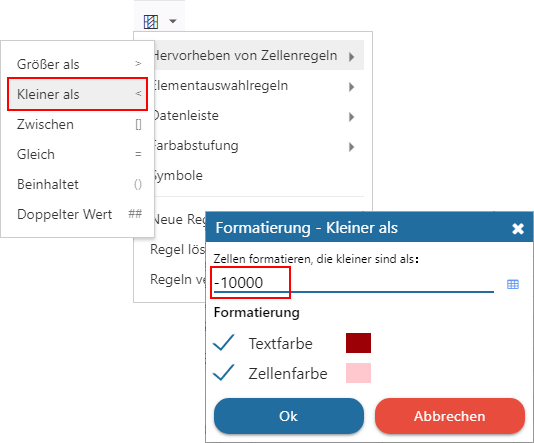
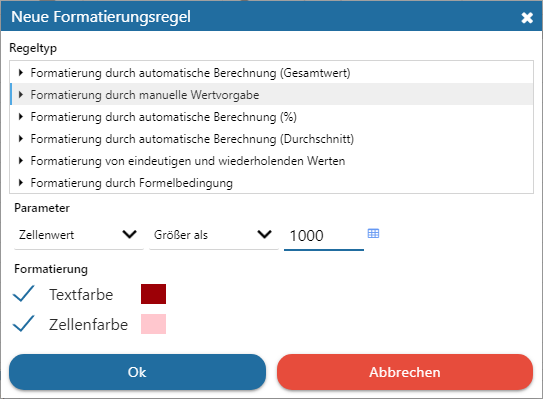

Ø

Bedingte FormatierungMit Hilfe einer bedingten Formatierung kann eine Zelle aufgrund des Inhalts mit einer speziellen Formatierung versehen werden. Hierfür stehen Farben, Datenleisten und Symbole zur Verfügung.
Die Anlage an sich kann über eine Schnellauswahl oder über einen Assistenten erfolgen:
ü Schnellauswahl
Nach Anwahl des
Buttons kann im aufgehenden Menü über den Bereich "Hervorheben von Zellenregeln"
bis "Symbole" eine Schnellerfassung erfolgen dar. D.h. es wird ein Zellenbereich
im CalcSheet markiert, eine explizierte Bedingung gewählt, ggfs. die Parameter
definiert (z.B. Größer als 1000) und die Bedingte Formatierung ist bereits
angelegt.

ü Assistent
Über die Auswahl
"Neue Regel" wird ein Assistent geöffnet, in welchem die Bedingten
Formatierungen erstellt werden können.

Hinweis
Die Bedingte Formatierung kann auf Grundlage von Zahl, Datum oder Formel stattfinden.